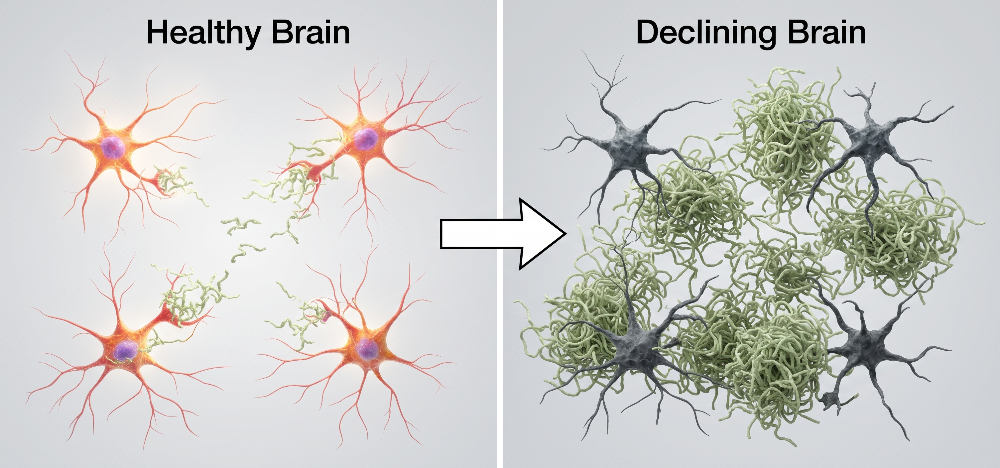
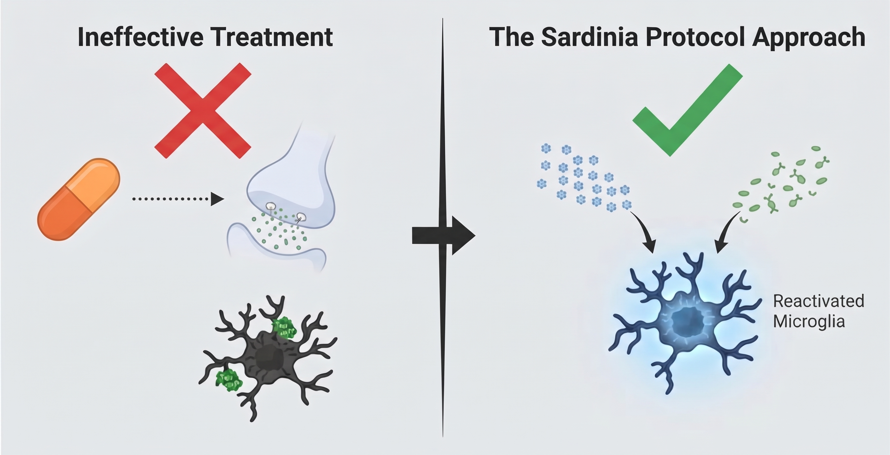
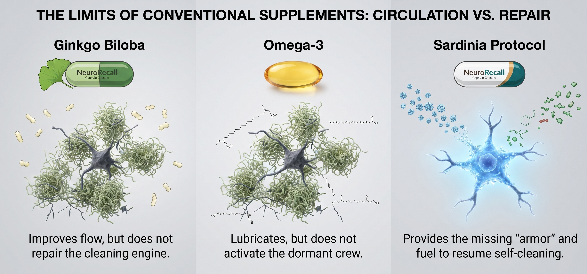
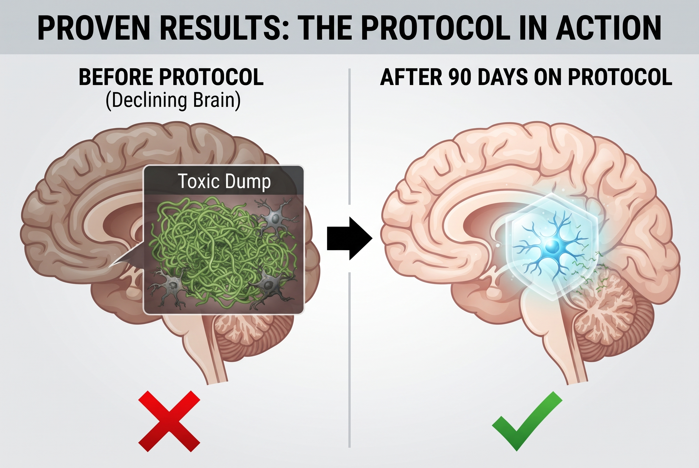

The truth the pharmaceutical industry doesn't want you to know about "normal dementia"
Why your memories (and those of the people you love) aren't disappearing because of age, but because of a "toxic trash heap" that is paralyzing the brain's cleaning system.
And there's more…
What we discovered by analyzing the brains of Sardinia's centenarians (the island with the highest rate of mental longevity in the world) is that they don't have a "super-memory." They have an active cleaning system.
The number one way to reverse decline isn't taking more medication. It isn't exercising. Number one is "waking up" the brain's dormant cleaning crew.

The problem isn't that you "let your brain get rusty"
It's that the "Cleaning Crew" (Microglia) has been poisoned. Your brain was designed to clean itself. But at 50, this crew starts to fail because it loses its natural "armor."
Without that armor, the cleaning cells die while trying to clear toxic proteins (Tau). The result? The brain stops cleaning itself and starts rotting from the inside.
1. "Taking Dementia Medication" is masking the problem, not solving it
Most medications focus on increasing a neurotransmitter (such as acetylcholine) for a few hours. But that's like putting a bandage on a flat tire. While the "Cleaning Crew" remains paralyzed, toxic waste keeps building up. You're buying temporary relief while structural damage continues to advance.

2. Ginkgo Biloba and Omega-3 alone don't reactivate cleaning
These supplements are good for circulation, but they don't "wake up" the cleaning cells. It's like putting gasoline in a car with a seized engine. They improve flow, but they don't fix the machine. You need a specific compound that provides the "armor" Microglia is missing. Without it, any supplement is just money down the drain.

3. Your brain is a house with a clogged recycling system
Imagine your house is 100 years old. The paint is peeling (memories fading). You can repaint the walls (medication), but dirt keeps falling from the ceiling. The only solution is to fix the recycling system. When you activate the "Cleaning Crew," the house starts cleaning itself. The walls no longer need paint; they become like new again. That's what we call "Structural Restoration."
So, how do you "wake up" this crew without going through months of clinical trials?
You need the "Sardinia Protocol." A two-ingredient ritual that provides the "armor" of lithium orotate and the fuel of epicatechin (pure cocoa) for Microglia.
It isn't a miracle pill. It's a biological reset. One capsule a day that restores the clarity, dignity, and presence the disease took away.

The video that changed everything
This is the exact moment Dr. Voss shows an MRI scan of a 72-year-old patient's brain, 90 days after the protocol. If you want to see the "cleaning" happening in real time with your own eyes, watch the next 4 minutes.
Watch the Guidance and View the Protocol* The video shows real, peer-reviewed MRI data.
What caregivers are saying
"I thought I was losing my mind from all the caregiving. The part about the 'recycling system' made me realize it wasn't a lack of love, but a missing mechanism. Since we started the protocol, my mother has stopped getting lost in the living room. She called me by my name, not 'daughter.' I cried in the car."
"The 'flat tire' analogy was the icing on the cake. I was spending a fortune on medications that only worked until lunchtime. Now, with the 'armor' of lithium orotate, he remembers the details of our honeymoon."